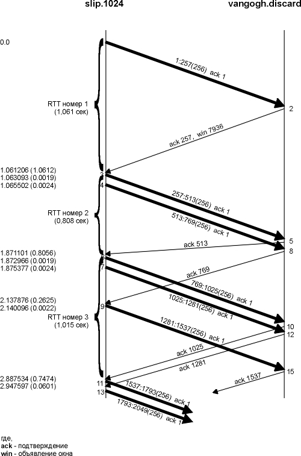
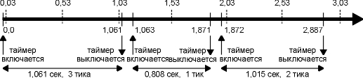
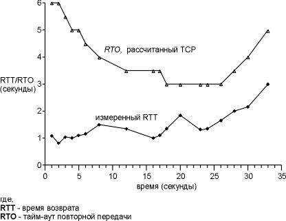
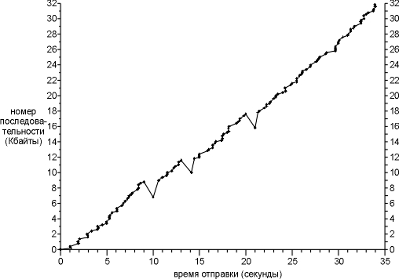
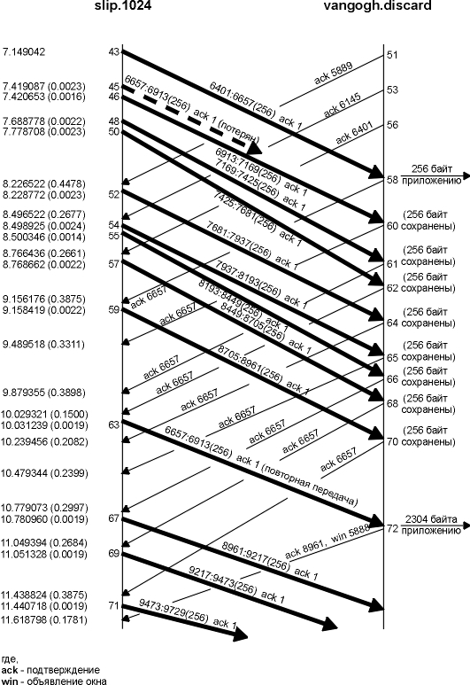
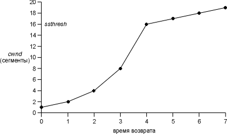
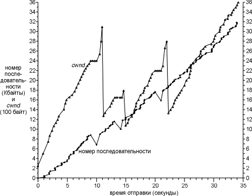

Глава 21 Тайм-ауты и повторные передачи TCP
TCP - это надежный транспортный уровень. Один из способов обеспечения надежности заключается в том, что удаленный участник обмена подтверждает полученные данные. Однако, сегменты данных, которые должны быть подтверждены, могут быть потеряны. TCP отрабатывает подобные ситуации установкой тайм-аута, при отправке данных; если данные не были подтверждены до момента истечения тайм-аута, TCP передает их повторно. Основными составляющими частями подобной технологии являются тайм-ауты и повторные передачи. Как определяются величины тайм-аутов, и как часто осуществляются повторные передачи?
Мы уже видели два примера тайм-аута и повторной передачи: (1) в примере, посвященном недоступности порта ICMP в разделе "ICMP ошибка недоступности порта" главы 6, мы видели, что TFTP клиент, использующий UDP, применяет простую стратегию тайм-аута и повторной передачи: он устанавливает период тайм-аута в 5 секунд и осуществляет повторную передачу каждые 5 секунд. (2) В примере ARP для несуществующего хоста (глава 4, раздел "Примеры ARP") мы видели, что когда TCP старается установить соединение, он повторно передает свои SYN, используя увеличенные задержки между каждой повторной передачей.
TCP управляет четырьмя таймерами для каждого соединения.
В этой главе мы начнем с простых примеров того, как TCP использует тайм-ауты и повторные передачи, а затем рассмотрим более подробные примеры, которые позволят понять, как TCP осуществляет управление таймерами. Мы увидим то, как стандартные реализации рассчитывают время возврата сегментов TCP, и как TCP использует эти расчеты, для того чтобы вычислить тайм-аут для повторной передачи следующего сегмента, который он собирается отправить. Затем мы рассмотрим, как TCP избегает переполнения - что TCP делает, когда пакеты теряются - и в завершение, рассмотрим реальные примеры того, каким образом теряются пакеты. Также мы рассмотрим новый алгоритм быстрой передачи и алгоритм быстрого восстановления, а затем посмотрим, что позволяет TCP быстрее определять факт потери пакетов, нежели просто ожидание того, когда истечет таймер.
Простой пример использования тайм-аутов и повторных передач
Во-первых, давайте рассмотрим стратегию повторных передач, которая используется TCP. Мы установим соединение, отправим какие-нибудь данные, чтобы убедиться в том, что соединение функционирует, отсоединим кабель, отправим еще данные и посмотрим, как поступит TCP:
bsdi % telnet svr4 discard
Trying 140.252.13.34...
Connected to svr4.
Escape character is '^]'.
hello, world
эту
строку мы посылаем обычным образом
and hi
перед
тем как отправить эту строку, отсоединяем кабель
Connection closed by foreign host. вывод,
после того как TCP ждал 9 минут
На рисунке 21.1 показан вывод команды tcpdump. (Мы удалили всю информацию, связанную с типом сервиса, которую устанавливает bsdi.)
1 0.0
bsdi.1029
> svr4.discard: S 1747921409:1747921409(0)
win
4096 <mss 1024>
2 0.004811 ( 0.0048) svr4.discard >
bsdi.1029: S 3416685569:3416685569(0)
ack
1747921410
win
4096 <mss 1024>
3 0.006441 ( 0.0016) bsdi.1029 >
svr4.discard: . ack 1 win 4096
4 6.102290 ( 6.0958) bsdi.1029 >
svr4.discard: P 1:15(14) ack 1 win 4096
5 6.259410 ( 0.1571) svr4.discard >
bsdi.1029: . ack 15 win 4096
6 24.480158 (18.2207) bsdi.1029 > svr4.discard: P
15:23(8) ack 1 win 4096
7 25.493733 ( 1.0136) bsdi.1029 > svr4.discard: P
15:23(8) ack 1 win 4096
8 28.493795 ( 3.0001) bsdi.1029 > svr4.discard: P
15:23(8) ack 1 win 4096
9 34.493971 ( 6.0002) bsdi.1029 > svr4.discard: P
15:23(8) ack 1 win 4096
10 46.484427 (11.9905) bsdi.1029 > svr4.discard: P
15:23(8) ack 1 win 4096
11 70.485105 (24.0007) bsdi.1029 > svr4.discard: P
15:23(8) ack 1 win 4096
12 118.486408 (48.0013) bsdi.1029 > svr4.discard: P
15:23(8) ack 1 win 4096
13 182.488164 (64.0018) bsdi.1029 > svr4.discard: P
15:23(8) ack 1 win 4096
14 246.489921 (64.0018) bsdi.1029 > svr4.discard: P
15:23(8) ack 1 win 4096
15 310.491678 (64.0018) bsdi.1029 > svr4.discard: P
15:23(8) ack 1 win 4096
16 374.493431 (64.0018) bsdi.1029 > svr4.discard: P
15:23(8) ack 1 win 4096
17 438.495196 (64.0018) bsdi.1029 > svr4.discard: P
15:23(8) ack 1 win 4096
18 502.486941 (63.9917) bsdi.1029 > svr4.discard: P
15:23(8) ack 1 win 4096
19 566.488478 (64.0015) bsdi.1029 > svr4.discard: R
23:23(0) ack 1 win 4096
Рисунок 21.1 Простой пример тайм-аута и повторной передачи TCP.
Строки 1, 2 и 3 соответствуют обычному установлению TCP соединения. Строка 4 это передача "hello, world" (12 символов плюс символ возврата каретки и пропуска строки), а в строке 5 - подтверждение. Затем мы отсоединяем Ethernet кабель от svr4.
В строке 6 показано, как передается "and hi". Строки 7-18 это 12 повторных передач сегмента, а в строке 19 TCP прекращает попытки передачи и посылает сброс.
Обратите внимание на временные промежутки между последовательными повторными передачами: они происходили в моменты времени 1, 3, 6, 12, 24, 48 и 64 секунды. Дальше в этой главе мы увидим, что первый тайм-аут устанавливается в 1,5 секунды после первой передачи. (Причина, по которой он возник через 1,0136 секунды после первой передачи, а не точно через 1,5 секунды, была объяснена на рисунке 18.7.) После этого величина тайм-аута удваивается для каждой передачи, причем верхний предел составляет 64 секунды.
Подобное увеличение называется экспотенциальным наращиванием (exponential backoff). Сравните это с примером TFTP, который приведен в разделе "ICMP ошибка недоступности порта" главы 6, где каждая повторная передача осуществляется через 5 секунд после предыдущей.
Разница во времени между первой передачей пакета (строка 6, момент времени 24,480) и сбросом (строка 19, момент времени 566,488) составляет примерно 9 минут. Современные TCP реализации довольно настойчивы в попытках отправить данные!
В большинстве реализаций полная величина тайм-аута ненастраиваемая. Solaris 2.2 позволяет администратору изменить эту величину (переменная tcp_ip_abort_interval в разделе "Solaris 2.2" приложения E), а по умолчанию она составляет только 2 минуты, а не 9 минут, как это принято в большинстве реализаций.
Определение времени возврата
Основой тайм-аутов и повторных передач TCP является расчет времени возврата (RTT - round-trip time), соответствующего данному соединению. Мы ожидаем, что оно может изменяться со временем, так как может измениться маршрут, или загрузка сети. TCP должен отследить эти изменения и соответственно модифицировать тайм-ауты.
Во-первых, TCP должен рассчитать RTT между отправкой байта с конкретным номером последовательности и получением подтверждения на этот номер последовательности. Из предыдущей главы мы знаем, что обычно не существует полного соответствия между сегментами данных и подтверждениями (ACK). На рисунке 20.1 это означало, что один RTT, который может быть вычислен отправителем, является временем между передачей сегмента 4 (байты данных 1-1024) и получением сегмента 7 (ACK байт 1-2048), даже если этот ACK подтверждает дополнительно 1024 байта. Мы используем величину M, чтобы обозначить рассчитанный RTT.
Для определения RTT существует расширение к исходной спецификации TCP, которое называется хэшированная оценочная функция RTT (обозначается R)
R ╛ a R + (1 - a )M
где a это коэффициент хэширования с рекомендуемым значением 0,9. Хэширование - способ организации структур данных (хэш таблиц), обеспечивающий эффективный поиск и пополнение; положение элемента данных в хэш таблице определяется значением функции расстановки, отображающей множество возможных ключей элементов данных и множество индексов таблицы и обеспечивающей равномерное заполнение. Хэшированный RTT обновлялся каждый раз, когда осуществлялось новое вычисление. Девяносто процентов данных для каждого нового расчета берется из предыдущего расчета, а десять из нового.
Для подобной хэшированной оценочной функции, которая изменяется с изменением RTT, RFC 793 рекомендует, чтобы тайм-аут повторной передачи (RTO) устанавливался следующим образом
RTO = Rb
где b это коэффициент изменения задержки с рекомендуемым значением равным 2.
[Jacobson 1988] подробно обсуждает проблемы, связанные с подобным подходом, в основном заключающиеся в том, что он не может применяться при широком диапазоне изменения RTT, и является причиной нежелательных повторных передач. Как замечает Jacobson, нежелательные повторные передачи увеличивают загрузку сети.
В этом случае необходимо добавить возможность отслеживать расхождения в расчетах RTT в дополнение к хэшированной функции оценки RTT. Расчет RTO основанный на среднем и расхождении дает значительно лучшие результаты при широком диапазоне изменений времен возврата, чем просто расчет RTO как постоянного кратного среднего значения. Рисунки 5 и 6 в [Jacobson 1988] показывают сравнение значений RTO в соответствии с RFC 793 для некоторых реальных времен возврата, с расчетами RTO, которые мы показали ранее, которые принимают во внимание изменение времен возврата.
Как описано у Jacobson, среднее отклонение является хорошим приближением к стандартному отклонению, однако рассчитывается значительно легче. (Расчет стандартного отклонения требует вычисления квадратного корня.) Таким образом, следующие уравнения могут быть применены к каждому расчету RTT M.
Err = M - A
A ╛ A + gErr
D ╛ D + h(| Err | - D)
RTO = A + 4D
где A это хэшированный RTT (оценочная функция среднего), а D это хэшированное среднее отклонение. Err это разница между только что рассчитанным значением и текущим значением оценочной функции RTT. Оба A и D используются для расчета следующего тайм-аута повторной передачи (RTO). Увеличение среднего (g) установлено в значение 1/8 (0,125). Увеличение отклонения (h) установлено в 0,25. Максимальное увеличение отклонения делает рост RTO быстрее при изменении RTT.
[Jacobson 1988] устанавливает 2D при расчете RTO, однако для следующих исследований [Jacobson 1990c] изменяет это значение на 4D, что соответствует реализации BSD Net/1.
Jacobson показывает способ осуществить эти вычисления с использованием целочисленной арифметики, именно так это обычно делается в стандартных реализациях. (Одна из причин заключается в том, что g, h и множитель 4 - это степени двух, поэтому все операции могут быть осуществлены с помощью сдвига, без умножений и делений.)
Сравнение исходного метода с методом Jacobsonа показывает, что расчеты хэшированного среднего одинаковы (a равно единица минус увеличение (g)), однако используются различные увеличения. Также, расчет RTO по Jacobsonу зависит от обоих значений - хэшированного RTT и хэшированного среднего отклонения, тогда как оригинальный метод использует умножение хэшированных RTT.
В следующем разделе мы увидим, как устанавливаются эти оценочные функции, когда будем рассматривать примеры.
В процессе повторной передачи пакета могут возникнуть проблемы. Скажем, пакет передан, тайм-аут отработан, RTO экспотенциально увеличен, как показано в разделе "Простой пример использования тайм-аутов и повторных передач" этой главы, пакет передан повторно с большим RTO и получено подтверждение. Соответствует ли это подтверждение первой передаче или второй? Это называется проблемой двусмысленности повторной передачи (retransmission ambiguity problem) .
[Karn and Partridge 1987] указывает, что когда применяется тайм-аут и повторная передача, мы не можем обновить оценочные функции RTT, когда, в конце концов, прибывает подтверждение на повторно переданные данные. Это потому, что мы не знаем, которой передаче соответствует подтверждение (ACK). (Возможно, первая передача была задержана, но не была отброшена, или был задержан ACK на первую передачу.)
Так как данные были повторно переданы и к RTO было применено экспотенциальное наращивание, мы повторно используем экспотенциально увеличенный RTO для следующей передачи. Новый RTO не рассчитывается до тех пор, пока не будет получено подтверждение на сегмент, который не отправлялся повторно.
В этой главе мы рассмотрим примеры, которые проиллюстрируют детали разных реализаций TCP тайм-аутов и повторных передач, медленный старт и предотвращение переполнения.
С помощью программы sock отправлено 32768 байт данных с хоста slip на discard сервис хоста vangogh.cs.berkeley.edu:
slip % sock -D -i -n32 vangogh.cs.berkeley.edu discard
Обратимся к рисунку, находящемуся на внутренней стороне обложки. Из рисунка видно, что slip подсоединен к Ethernet 140.252.1 двумя SLIP каналами, а затем через Internet к пункту назначения. Так как используется два SLIP канала (со скоростью 9600 бит в секунду), мы ожидаем появления определенных задержек.
Команда, приведенная выше, осуществит 32 записи по 1024 байта. Так как MTU между slip и bsdi составляет 296, то будет сгенерировано 128 сегментов, каждый из которых будет содержать 256 байт пользовательских данных. Полное время передачи займет примерно 45 секунд, и мы увидим один тайм-аут и три повторные передачи.
Пока осуществляется эта передача, мы запустим tcpdump на хосте slip, чтобы увидеть все сегменты, которые были переданы и приняты. В дополнение мы указали опцию -D, чтобы включить отладку сокетов (см. приложение A, раздел "Опция отладки сокета"). Кроме того, у нас была возможность запустить модифицированную версию программы trpt(8), которая позволяет напечатать некоторые переменные в блоке управления соединением, имеющие отношение к временам задержки, медленному старту и предотвращению переполнения.
Из-за того, что вывод достаточно большой, мы не можем показать его целиком, однако рассмотрим его по частям, в процессе изучения главы. На рисунке 21.2 показана передача данных и подтверждений в течение первых 5 секунд. Мы немного модифицировали этот вывод от предыдущего вывода команды tcpdump. Мы только оценили моменты времени, когда пакет отправлялся или принимался хостом, на котором запущена программа tcpdump, на этом рисунке мы хотели показать, что пакет двигается по сети (так как это соединение в локальной сети не похоже на распределенный Ethernet), и показать, когда принимающий хост, возможно, генерирует подтверждения. (Мы удалили все объявления окна. slip всегда объявляет окно размером 4096, а vangogh всегда объявляет окно 8192.)

Рисунок 21.2 Обмен пакетами и расчет RTT.
Также обратите внимание на то, что на этом рисунке мы пронумеровали сегменты 1-13 и 15 в том порядке, в котором они были отправлены или приняты хостом slip. Это соответствует выводу tcpdump, который был получен для этого хоста.
Определение времени возврата
Три большие фигурные скобки, находящиеся с левой стороны временной диаграммы, указывают на то, какие сегменты были использованы при расчете RTT. Не для всех сегментов время было засечено.
Большинство реализаций TCP, происходящих от Berkeley, рассчитывают только одно значение RTT для соединения за один раз. Если в тот момент, когда отправляется сегмент данных, таймер для данного соединения уже используется, время для этого сегмента не засекается.
Установка времени осуществляется путем увеличения счетчика каждый раз, когда запускается 500-миллисекундный таймер TCP. Это означает, что для сегмента, подтверждение на который прибывают через 550 миллисекунд после того, как сегмент был отправлен, может быть принято RTT как равное одному тику (500 миллисекунд), так и RTT равное двум тикам (1000 миллисекунд).
В дополнение к этому счетчику тиков для каждого соединения, запоминается начальный номер последовательности данных в сегменте. Когда принимается подтверждение, содержащее этот номер последовательности, таймер выключается. Если данные не были повторно переданы, когда прибыл ACK, хэшированное RTT и хэшированное среднее отклонение обновляется на основе новых значений.
Таймер для соединения, показанного на рисунке 21.2, стартует, когда передается сегмент 1, и выключается, когда прибывает подтверждение на него (сегмент 2). Несмотря на то, что его RTT равен 1,061 секунды (из вывода команды tcpdump), исследование отладочной информации сокета показывает, что за этот период произошло 3 тика часов TCP, а это обозначает, что RTT равен 1500 миллисекунд.
Следующий сегмент, для которого засекли время, сегмент номер 3. Когда, через 2,4 миллисекунды, передается сегмент номер 4, он не может быть отслежен по времени, так как таймер для этого соединения уже используется. Когда прибывает сегмент 5, подтверждая данные, на которые было засечено время, его RTT рассчитывается равным 1 тику (500 миллисекунд), даже несмотря на то, что, как мы видели из вывода команды tcpdump, его RTT равен 0,808 секунды.
Таймер стартует снова, когда передается сегмент 6, и выключается, когда прибывает подтверждение на него, через 1,015 секунды (сегмент 10). Полученный RTT равен 2 тикам часов. Сегменты 7 и 9 не могут быть оценены по времени, так как таймер занят. Также, когда принимается сегмент 9 (ACK 769), ничего не обновляется, так как подтверждение не подтверждает байты, на которые засекли время.
На рисунке 21.3 показана взаимосвязь между реальными RTT, которые мы можем определить из вывода команды tcpdump, и счетчиком тиков часов.

Рисунок 21.3 Расчет RTT и тики часов.
Вверху мы показали тики часов, каждые 500 миллисекунд. Внизу - моменты времени, полученные из вывода команды tcpdump, и то, когда таймер соединения включался и выключался. Мы знаем, что между отправкой сегмента 1 и получением сегмента 2 прошло 3 тика, что заняло 1,061 секунды, таким образом, мы предполагаем, что первый тик возник в момент времени 0,03. (Первый тик должен произойти между 0,00 и 0,061.) На рисунке показано, что второй RTT был оценен равным 1 тику, а третий - 2 тикам.
В этом примере было передано 128 сегментов и получено 18 значений RTT. На рисунке 21.4 показаны измеренные RTT (взятые из вывода tcpdump) вместе с RTO, используемого в TCP для установки тайм-аутов (взято из отладочной информации сокета). Момент времени 0 (на рисунке 21.2) по оси OX соответствует отправке первого сегмента данных, а не отправке первого SYN.

Рисунок 21.4 Рассчитанные RTT и RTO TCP для этого примера.
Первые три точки, которые соответствующие измеренным RTT, соответствуют трем RTT, которые мы показали на рисунке 21.2. Пропуски в значениях RTT около моментов времени 10, 14 и 21 вызваны повторными передачами, которые здесь имели место (что будет показано позже в этой главе). Алгоритм Карна не позволяет обновить наши оценки до тех пор, пока еще один сегмент не будет передан и подтвержден. Также обратите внимание на то, что для этой реализации рассчитанные RTO TCP всегда кратны 500 миллисекундам.
Расчет оценочных функций RTT
Давайте посмотрим, как устанавливаются и обновляются оценочные функции RTT (хэшированный RTT и хэшированное среднее отклонение), и как рассчитывается тайм-аут для каждой передачи.
Переменные A и D устанавливаются в 0 и 3 секунды соответственно. Исходный тайм-аут для передачи рассчитывается с использованием формулы
RTO = A + 2D = 0 + 2 x 3 = 6 секунд
(Коэффициент 2D используется только для этого первоначального расчета. Затем при расчете RTO к A прибавляется 4D, как было показано ранее.) Это RTO для передачи первоначального SYN.
В случае если исходный SYN потерян, осуществляется тайм-аут и повторная передача. На рисунке 21.5 показаны первые четыре строки вывода команды tcpdump.
1 0.0
slip.1024
> vangogh.discard: S 35648001:35648001(0)
win
4096 <mss 256>
2 5.802377 (5.8024) slip.1024 > vangogh.discard: S
35648001:35648001(0)
win
4096 <mss 256>
3 6.269395 (0.4670) vangogh.discard > slip.1024: S
1365512705:1365512705(0)
ack
35648002
win
8192 <mss 512>
4 6.270796 (0.0014) slip.1024 > vangogh.discard: . ack 1
win 4096
Рисунок 21.5 Тайм-аут и повторная передача исходного SYN.
Когда тайм-аут возникает позже, через 5,802 секунды, текущий RTO рассчитывается следующим образом
RTO = A + 4D = 0 + 4 x 3 = 12 секунд
Затем к RTO равному 12 применяется экспотенциальное наращивание. Так как это первый тайм-аут, используется множитель 2, при этом значение следующего тайм-аута будет равно 24 секундам. Следующий тайм-аут рассчитывается с использованием множителя 4, значения тайм-аута становится 48 секунд: 12 x 4. (Эти исходные RTO для первого SYN, 6 секунд и затем 24 секунды, как раз то, что мы видели на рисунке 4.5.)
ACK прибывает через 467 миллисекунд после повторной передачи. Значения A и D не обновляются, потому что алгоритм Карна определяет двусмысленность передачи. Следующий отправляемый сегмент - это ACK в строке 4, однако время для него не засекается, так как это всего лишь подтверждение. (Время устанавливается только для сегментов, содержащих данные.)
Когда отправляется первый сегмент данных (сегмент 1 на рисунке 21.2), RTO не меняется, опять же в соответствии с алгоритмом Карна. Текущее значение, равное 24 секундам, повторно используется до тех пор, пока не будет осуществлено измерение RTT. Это означает, что RTO для момента времени равного 0 на рисунке 21.4 равно в действительности 24, однако мы не берем во внимание эту точку.
Когда прибывает подтверждение на этот первый сегмент данных (сегмент 2 на рисунке 21.2), получено 3 тика часов, и наши показатели устанавливаются следующим образом
A = M + 0,5 = 1,5 + 0,5 = 2
D = A/2 = 1
(Значение M равное 1,5 соответствует 3-м тикам часов.) Предыдущие установки A и D в 0 и 3 были сделаны для расчета первоначального RTO. Эти установки предназначены для первого расчета оценочных функций, с использованием первого измерения RTT M. RTO рассчитывается следующим образом
RTO = A + 4D = 2 + 4 x 1 = 6 секунд
Когда прибывает ACK на второй сегмент данных (сегмент 5 на рисунке 21.2), отсчитан 1 тик часов (0,5 секунды), и наши показатели обновляются следующим образом
Err = M - A = 0,5 - 2 = -1,5
A = A + gErr = 2 - 0,125 x 1,5 = 1,8125
D = D + h(|Err| - D) = 1 + 0,25 x (1,5 - 1) = 1,125
RTO = A + 4D = 1,8125 + 4 x 1,125 = 6,3125
Существует несколько тонкостей в представлении Err, A и D, при расчетах с фиксированной точкой, которая и используется в действительности (однако мы показали для простоты с плавающей точкой). Эта разница дает RTO равное 6 секундам (а не 6,3125), как раз столько, сколько было показано на рисунке 21.4 для момента времени 1,871.
Мы описали алгоритм медленного старта в разделе "Медленный старт" главы 20, а также видели его в действии на рисунке 21.2.
Первоначально по соединению отправляется только один сегмент, и подтверждение на него должно быть получено перед тем, как будет отправлен другой сегмент. Когда сегмент 2 принят, отправляются два следующих сегмента.
Давайте теперь рассмотрим передачу сегментов данных. На рисунке 21.6 показана зависимость стартового номера последовательности сегмента от времени, когда сегмент был отправлен. Это позволит нам более наглядно представить процесс передачи данных. Обычно точки, соответствующие данным, должны двигаться вверх вправо, при этом наклон соответствует скорости передачи. Повторные передачи показаны отклонением графика вниз вправо.
В начале раздела "Пример RTT" этой главы мы сказали, что полное время передачи составляло примерно 45 секунд, однако на этом рисунке мы показали только 35 секунд. (Потому что, именно 35 секунд потребовалось для передачи только сегментов данных.) Первый сегмент данных не передавался в течении 6,3 секунды после отправки первого SYN, потому что первый SYN был потерян при передаче и передан повторно (рисунок 21.5). После того как последний сегмент данных и FIN были отправлены (момент времени 34,1 на рисунке 21.6), потребовалось еще примерно 4,0 секунды на то, чтобы принять последние 14 ACK от получателя перед тем, как от получателя был получен FIN.

Рисунок 21.6 Отправка 32768 байт данных от slip на vangogh.
На рисунке 21.6 мы сразу видим три повторные передачи в моменты времени 10, 14 и 21. Во всех трех случаях только один сегмент передается повторно, потому что только одна точка оказалась ниже предыдущих.
Давайте рассмотрим первый из этих "скачков вниз" (в момент времени 10). Вывод команды tcpdump мы рассмотрим вместе с рисунком 21.7.

Рисунок 21.7 Обмен пакетами в процессе повторной передачи в районе 10-секундной метки.
Мы удалили все объявления окна, за исключением сегмента 72, который мы обсудим ниже. slip всегда объявляет окно равное 4096, а vangogh объявляет окно равное 8192. Сегменты на этом рисунке пронумерованы как продолжение рисунка 21.2, где первый сегмент данных по соединению был с номером 1. Как и на рисунке 21.2, сегменты пронумерованы в соответствии с тем, как они отправлялись или принимались на хосте slip, где была запущена программа tcpdump. Мы также удалили несколько сегментов, которые не имели отношения к нашему обсуждению (44, 47 и 49, а также все ACK от vangogh).
Случилось так, что сегмент 45 либо потерялся, либо пришел поврежденным - мы не можем сказать этого определенно, основываясь на выводе команды. Все что мы можем увидеть на хосте slip это то, что было подтверждено все, за исключением байта 6657 (сегмент 58), за которым следовали следующие восемь ACK с тем же самым номером последовательности. Прием сегмента 62, третьего из дублированных ACK, вызвал повторную передачу данных, начиная с номера последовательности 6657 (сегмент 63). В действительности, реализации, происходящие от Berkeley, подсчитывают количество принятых дублированных ACK, и когда принимается третий, они подразумевают, что сегмент потерян, и повторно передают только один сегмент, начиная с этого номера последовательности. Подобное поведение является частью алгоритма быстрой повторной передачи (fast retransmit), который следует за алгоритмом быстрого восстановления данных (fast recovery algorithm), которые мы обсудим в разделе "Быстрая повторная передача и алгоритм быстрого восстановления" этой главы.
Обратите внимание на то, что после повторной передачи (сегмент 63) отправитель продолжает обычную передачу данных (сегменты 67, 69 и 71). TCP не ожидает того, что удаленный конец подтвердит повторную передачу.
Давайте посмотрим, что происходит на принимающем конце. Когда обычные данные приходят последовательно (сегмент 43), принимающий TCP передает 256 байт данных пользовательскому процессу. Однако следующий принятый сегмент (сегмент 46) не в порядке; стартовый номер последовательности данных (6913) не является следующим ожидаемым номером последовательности (6657). TCP сохраняет 256 байт данных и отвечает посредством ACK с самый большим номером последовательности, который был принят успешно, плюс один (6657). Следующие семь сегментов, принятых vangogh (48, 50, 52, 54, 55, 57 и 59), также не в порядке. Данные сохраняются принимающим TCP, и генерируются дублированные ACK.
Таким образом, для TCP не существует способа сообщить удаленному концу, что сегмент отсутствует. Помимо этого TCP не может подтвердить поврежденные данные. Все что может сделать vangogh в подобном случае - это продолжать посылать ACK с номером 6657.
Когда прибывают отсутствующие данные (сегмент 63), принимающий TCP имеет в своем буфере байты данных 6657-8960. Он передает эти 2304 байта пользовательскому процессу. Все 2304 байта подтверждены в сегменте 72. Также обратите внимание на то, что этот ACK объявляет окно равное 5888 (8192 - 2304), так как пользовательский процесс не имеет возможности прочитать 2304 байта, которые уже готовы для него.
Если мы рассмотрим более подробно вывод команды tcpdump для моментов времени 14 и 21 на рисунке 21.6, то увидим, что они были вызваны получением трех дублированных ACK, а это указывает на то, что пакет был потерян. Во всех этих случаях только один пакет был передан повторно.
Мы продолжим рассмотрение этого примера в разделе "Пример переполнения (продолжение)" этой главы, после того как рассмотрим более подробно алгоритм предотвращения переполнения.
Алгоритм предотвращения переполнения
Медленный старт, который мы описали в разделе "Медленный старт" главы 20, это способ первоначально установить поток данных по соединению. Однако, в это же самое время мы достигнем предела у промежуточного маршрутизатора, при котором пакеты будут отбрасываться. Предотвращение переполнения это способ, позволяющий предотвратить потерю пакетов. Подробности можно найти в [Jacobson 1988].
Предположение, на котором строится этот алгоритм, заключается в том, что из-за различных повреждений теряется очень малое число пакетов (значительно меньше чем 1%), поэтому потеря пакетов сигнализирует о том, что в каком-либо месте сети между источником и назначением появилось переполнение. Существуют два признака, по которым можно определить, что пакеты теряются: появление тайм-аутов и получение дублированных ACK. (Мы видели последнее в разделе "Пример переполнения" этой главы. Если же использовать тайм-аут как показатель возникновения переполнения, то нам потребуется хороший алгоритм расчета RTT, примерно такой, как описан в разделе "Определение времени возврата".)
Предотвращение переполнения и медленный старт это независимые друг от друга алгоритмы, более того, работающие с различными объектами. Однако, когда возникает переполнение, мы хотим замедлить скорость передачи пакетов по сети, а затем использовать медленный старт, чтобы начать все с начала. На практике эти алгоритмы используются вместе.
Предотвращение переполнения и медленный старт требуют, чтобы для каждого соединения были определены две переменные: окно переполнения, cwnd, и размер порога медленного старта, ssthresh. Вместе алгоритмы работают следующим образом:
Инициализация заданного соединения устанавливает cwnd в один сегмент, а ssthresh в 65535 байт. Подпрограмма вывода TCP определит, какое из значений меньше: cwnd или окно, объявленное получателем и никогда не пошлет больше минимального значения. Предотвращение переполнения это способ контролировать поток данных, со стороны отправителя, тогда как объявление окна это способ контролировать поток данных, со стороны получателя. Первый основан на оценке отправителем того, насколько переполнена сеть, тогда как последний связан с величиной доступного буферного пространства у получателя для данного соединения. Когда возникает переполнение (на что указывает тайм-аут или получение дублированных ACK), одна половина текущего размера окна (меньшее значение из величин cwnd и размера окна, объявленного получателем, но по меньшей мере два сегмента) сохраняется в ssthresh. Более того, если мы узнали о переполнении с помощью тайм-аута, cwnd устанавливается в один сегмент (то есть осуществляется медленный старт). Когда новые данные подтверждены удаленным концом, cwnd увеличивается, однако способ этого увеличения зависит от того, работает ли алгоритм медленного старта или предотвращения переполнения. Если cwnd меньше или равно ssthresh, используется медленный старт; иначе используется предотвращение переполнения. Медленный старт продолжается до тех пор, пока мы не достигнем половины пути до того момента где были, когда возникло переполнение (то есть, до того момента пока мы не запишем половину размера окна, которое доставило нам проблемы в шаге 2), после чего используется алгоритм предотвращения переполнения. Медленный старт требует, чтобы cwnd начиналась с одного сегмента и увеличивалась на один сегмент каждый раз при приеме ACK. Как указано в разделе "Медленный старт" главы 20, это открывает окно экспотенциально: посылается один сегмент, затем два, затем четыре и так далее. Предотвращение переполнения требует, чтобы cwnd увеличивалась на 1/cwnd плюс меньшая дробная часть размера сегмента (размер сегмента, поделенный на 8) каждый раз, когда прибывает ACK. (Это ошибка реализации, которая присутствовала во всех релизах 4.3BSD и даже в 4.4BSD. Но этой ошибки нет в будущих реализациях [Floyd 1994]. Обратите внимание на то, что в примерах ниже в главе используется этот термин, потому что примеры исполнялись на реализации с ошибкой [см. рисунок 21.9 и рисунок 21.11]). Это увеличение посредством сложения, по сравнению с экспотенциальным увеличением при медленном старте. Мы хотим увеличивать cwnd по крайней мере на один сегмент за каждый промежуток времени равный времени возврата (вне зависимости от того, сколько ACK было принято за этот RTT), тогда как медленный старт увеличивает cwnd на количество ACK принятых за время возврата. Прибавление меньшей дробной части размера сегмента позволяет быстрее открывать большие окна.
Релиз 4.3BSD Tahoe, описанный в [Leffler et al. 1989], осуществляет медленный старт, только если удаленный конец находится в другой сети. Это было изменено в релизе 4.3BSD Reno таким образом, что медленный старт осуществляется всегда.
На рисунке 21.8 приведено описание медленного старта и предотвращения переполнения. Мы показали размер cwnd и ssthresh в блоках сегментов, тогда как в действительности их размер измеряется в байтах.

Рисунок 21.8 Медленный старт и предотвращение переполнения.
На этом рисунке мы предположили, что переполнение возникает, когда cwnd имеет значение равное 32 сегментам. ssthresh устанавливается в 16 сегментов, а cwnd устанавливается в 1 сегмент. Один сегмент посылается в момент времени 0 и предполагается, что ACK на него возвращается в момент времени 1, cwnd увеличивается до 2 сегментов. Затем отправляется два сегмента и предполагается, что их ACK прибывают в момент времени 2, cwnd увеличивается до 4 сегментов (по одному разу на каждый ACK). Этот экспотенциальный рост продолжается до тех пор, пока cwnd не будет равно ssthresh, а именно после того как 8 ACK были приняты между моментами времени 3 и 4. С этой точки увеличение cwnd линейное, причем максимальный увеличение - это увеличение на один сегмент за период равный времени возврата.
Как видно из этого рисунка, термин "медленный старт" не вполне корректен. Это, скорее, замедление передачи пакетов, которое вызвано переполнением, однако скорость увеличения количества пакетов, отправленных в сеть, увеличивается в течение медленного старта. Скорость увеличения не уменьшается до тех пор, пока не будет достигнуто значение ssthresh, когда начинает действовать предотвращение переполнения.
Быстрая повторная передача и алгоритм быстрого восстановления
В тексте не приводится достаточно жесткого разграничения между алгоритмом быстрой повторной передачи и быстрого восстановления. Это два абсолютно независимых алгоритма. Алгоритм быстрой повторной передачи вступает в действие, когда TCP определяет потерю сегмента и номер потерянного сегмента по наличию небольшого количества последователььных дублированных подтверждений (ACK). Потерянный сегмент передается повторно. Алгоритм быстрого востановления говорит, что после быстрой повторной передачи необходимо осуществить предотвращение переполнения, а не медленный старт. Алгоритм быстрой повторной передачи впервые появился в 4.3BSD Tahoe, однако за ним неправильно следовал медленный старт. Алгоритм быстрого восстановления впервые был применен в 4.3BSD Reno.
В 1990 году [Jacobson 1990b] алгоритм предотвращения переполнения был модифицирован. Мы уже видели эти модификации в действии в примере переполнения (раздел "Пример переполнения" этой главы).
Перед тем как познакомиться с этими изменениями представьте, что TCP требует сгенерировать немедленное подтверждение (дублированный ACK), когда принят поврежденный сегмент. Этот дублированный ACK не должен быть задержан. Цель дублированного ACK заключается в том, чтобы сообщить удаленному концу о том, что сегмент был получен поврежденным, и сообщить, какой ожидается номер последовательности.
Так как мы не знаем, было ли дублирование ACK вызвано потерей сегмента или просто тем, что изменился порядок следования сегментов, мы ожидаем прихода небольшого количества дублированных ACK. Это означает, что если сегменты просто пришли в другом порядке, будет получено только один или два дублированных ACK перед тем, как перемешанные сегменты будут обработаны, после чего будет сгенерирован новый ACK. Если же последовательно пришло три или более дублированных ACK, это уже является признаком того, что сегмент был потерян (раздел "Пример переполнения"). Мы осуществляем повторную передачу отсутствующего сегмента, не ожидая истечения таймера повторной передачи. Также мы осуществляем предотвращение переполнения, но не медленный старт.
На рисунке 21.7 мы видели, что медленный старт не осуществлялся после того, как было принято три дублированных ACK. Вместо этого отправитель осуществил повторную передачу, за которой следует три сегмента новых данных (сегменты 67, 69 и 71), перед тем как были получены подтверждения на повторную передачу (сегмент 72).
Причина того, что в этом случае не был применен медленный старт, заключается в том, что получение дублированных ACK сообщило нечто большее, нежели просто о потере одного пакета. Так как получатель может только генерировать дублированные ACK, когда прибывает еще один сегмент, можно сказать, что этот сегмент вышел из сети и находится в буфере получателя. Таким образом, данные все еще двигаются между двумя концами, и мы не хотим внезапно уменьшить поток, воспользовавшись медленным cтартом.
Алгоритм функционирует следующим образом.
Передается отсутствующий сегмент.
Значение cwnd устанавливается в значение ssthresh плюс утроенное значение размера сегмента.
Мы увидим, что произойдет с переменными cwnd и ssthresh, в следующем разделе.
Пример переполнения (продолжение)
Просматривая соединение с использованием tcpdump и отладочной опции сокетов (которую мы описали в разделе "Пример RTT"), мы можем увидеть значения cwnd и ssthresh при передаче каждого сегмента. Если максимальный размер сегмента (MSS) равен 256 байт, исходные значения cwnd и ssthresh будут равны 256 и 65535 соответственно. Каждый раз, когда принимается ACK, cwnd увеличивается на значение MSS и принимает значения 512, 768, 1024, 1280 и так далее. Предположим, что переполнения не происходит, поэтому окно переполнения достигнет значения окна, объявленного получателем, а это, в свою очередь, будет означать, что объявленное окно ограничивает поток данных.
Однако нам интересно посмотреть, что произойдет в случае возникновения переполнения. Рассмотрим тот же пример из раздела "Пример RTT". В этом примере переполнение появлялось четыре раза. Был тайм-аут при передаче исходного SYN, который предназначался для установления соединения (рисунок 21.5), после чего, в процессе передачи данных, было потеряно три пакета (рисунок 21.6).
На рисунке 21.9 показаны значения двух переменных cwnd и ssthresh, когда осуществлялась повторная передача исходного SYN, за которым следовало семь первых сегментов данных. (Мы показали обмен исходными сегментами данных и их ACK на рисунке 21.2.) Переданные байты данных показаны в формате вывода команды tcpdump: 1:257(256), что означает байты с 1 по 256.
Когда возникает тайм-аут при передаче SYN, ssthresh устанавливается в свое минимальное значение (512 байт, что равно, в этом примере, двум сегментам). cwnd устанавливается в один сегмент (256 байт), чтобы войти в фазу медленного старта.
Когда получены SYN и ACK, с этими переменными ничего не происходит, так как новые данные не были подтверждены.
Когда прибывает ACK 257, мы все еще находимся в режиме медленного старта, так как cwnd меньше либо равно ssthresh, поэтому cwnd увеличивается на 256. То же самое происходит, когда прибывает ACK 513.
Когда прибывает ACK 769, мы больше не находимся в режиме медленного старта, однако переходим в режим предотвращения переполнения. Новое значение cwnd рассчитывается следующим образом
cwnd ╛ cwnd + (разм.сегмента x разм.сегмента)/cwnd + разм.сегмента/8
Это больше на 1/cwnd, чем то, что мы показали ранее, принимая во внимание то, что cwnd рассчитывается в действительности в байтах, а не в сегментах. Для этого примера мы рассчитаем
cwnd ╛ 768 + (256 x 256)/768 + 256/8
Номер сегмента (рисунок 21.2) |
Действие |
Переменная |
|||
Отправлено |
Получено |
Комментарий |
cwnd |
ssthresh |
|
инициализация |
256 |
65535 |
|||
SYN |
|||||
SYN |
тайм-аут повторная передача |
256 |
512 |
||
SYN, ACK |
|||||
ACK |
|||||
1 |
1:257(256) |
||||
2 |
ACK 257 |
медленный старт |
512 |
512 |
|
3 |
257:513(256) |
||||
4 |
513:769(256) |
||||
5 |
ACK 513 |
медленный старт |
768 |
512 |
|
6 |
769:1025(256) |
||||
7 |
1025:1281(256) |
||||
8 |
ACK 769 |
предотвращение переполнения |
885 |
512 |
|
9 |
1281:1537(256) |
||||
10 |
ACK 1025 |
предотвращение переполнения |
991 |
512 |
|
11 |
1537:1793(256) |
||||
12 |
ACK 1281 |
предотвращение переполнения |
1089 |
512 |
|
Рисунок 21.9 Пример предотвращения переполнения.
что равно 885 (с использованием целочисленной арифметики). Когда прибывает следующий ACK 1025, мы рассчитаем
cwnd ╛ 885 + (256 x 256)/885 + 256/8
что равно 991.
Это суммарное увеличение cwnd продолжается до появления первой повторной передачи, которая происходит в районе 10-секундной метки на рисунке 21.6. Рисунок 21.10 это график для тех же самых данных, которые приведены на рисунке 21.6, но сюда добавлены значения cwnd.
Первые шесть значений cwnd на этом рисунке - это значения, которые мы рассчитали для рисунка 21.9. На этом рисунке невозможно указать разницу между экспотенциальным увеличением в течение медленного старта и суммарным увеличением в течение предотвращения переполнения, потому что фаза медленного старта проходит очень быстро.
Нам необходимо объяснить, что происходит в трех точках, когда возникает повторная передача. Вспомним, что каждая повторная передача возникает из-за того, что были приняты три дублированных ACK (это указывает на то, что пакет был потерян). Здесь вступает в действие алгоритм быстрой повторной передачи, описанный в разделе "Быстрая повторная передача и алгоритм быстрого восстановления". ssthresh сразу же устанавливается в половину размера окна, который соответствовал тому моменту, когда была осуществлена повторная передача, однако cwnd позволяет продолжать увеличение до тех пор, пока принимаются дублированные ACK, так как каждый дублированный ACK означает, что сегмент все еще находится в сети (принимающий TCP буферизировал его, ожидая прибытия отсутствующих данных).
Рисунок 21.10 аналогичен рисунку 21.9 и показывает значения cwnd и ssthresh. Номера сегментов в первой колонке соответствуют рисунку 21.7.

Рисунок 21.10 Значения cwnd и номера отправляемых последовательностей, при передаче данных.
Номер сегмента (рисунок 21.7) |
Действие |
Переменная |
|||
Отправлено |
Получено |
Комментарий |
cwnd |
ssthresh |
|
58 |
ACK 6657 |
подтверждение новых данных |
2426 |
512 |
|
59 |
8705:8961(256) |
||||
60 |
ACK 6657 |
дублированный ACK номер 1 |
2426 |
512 |
|
61 |
ACK 6657 |
дублированный ACK номер 2 |
2426 |
512 |
|
62 |
ACK 6657 |
дублированный ACK номер 3 |
1792 |
1024 |
|
63 |
6657:6913(256) |
повторная передача |
|||
64 |
ACK 6657 |
дублированный ACK номер 4 |
2048 |
1024 |
|
65 |
ACK 6657 |
дублированный ACK номер 5 |
2304 |
1024 |
|
66 |
ACK 6657 |
дублированный ACK номер 6 |
2560 |
1024 |
|
67 |
8961:9217(256) |
||||
68 |
ACK 6657 |
дублированный ACK номер 7 |
2816 |
1024 |
|
69 |
9217:9473(256) |
||||
70 |
ACK 6657 |
дублированный ACK номер 8 |
3072 |
1024 |
|
71 |
9473:9729(256) |
||||
72 |
ACK 8961 |
подтверждение новых данных |
1280 |
1024 |
|
Рисунок 21.11 Пример предотвращения переполнения (продолжение).
Значения cwnd увеличиваются постоянно, от последнего значения на рисунке 21.9 для сегмента 12 (1089), до первого значения на рисунке 21.11 для сегмента 58 (2426). Значение ssthresh осталось тем же самым (512), так как за этот период не было осуществлено повторных передач.
Когда прибыли первые два дублированные ACK (сегменты 60 и 61), они просто подсчитываются (третий дублированный ACK не прибыл), а cwnd остается неизменным. (Эта неизменяющаяся часть рисунка 21.10, предваряет первую повторную передачу.) Однако когда прибывает третий ACK, ssthresh устанавливается в значение равное половине cwnd. cwnd устанавливается в значение ssthresh плюс размер сегмента, умноженный на количество дублированных ACK (1024 + 3 x 256). Затем осуществляется повторная передача.
Прибывает еще пять дублированных ACK (сегменты 64-66, 68 и 70), при этом cwnd каждый раз увеличивается на размер сегмента. Наконец, прибывает новый ACK (сегмент 72), и cwnd устанавливается в значение ssthresh (1024), при этом стартует стандартный алгоритм предотвращения переполнения. Так как cwnd меньше или равно ssthresh (они равны), к cwnd добавляется размер сегмента, при этом получается значение 1280. Когда прибывает следующий ACK (который не показан на рисунке 21.11), cwnd больше чем ssthresh, поэтому cwnd устанавливается в значение 1363.
В течение фазы быстрой повторной передачи и быстрого восстановления мы передаем новые данные после получения дублированных ACK в сегментах 66, 68 и 70, однако не после получения дублированных ACK в сегментах 64 и 65. Причина этого заключается в значении cwnd по сравнению с количеством неподтвержденных байтов данных. Когда прибывает сегмент 64, cwnd становится равным 2048, однако мы имеем 2304 неподтвержденных байта (девять сегментов: 46, 48, 50, 52, 54, 55, 57, 59 и 63). Мы ничего не можем послать. Когда прибывает сегмент 65, cwnd становится равным 2304, поэтому мы все еще ничего не можем отправить. Однако, когда прибывает сегмент 66, cwnd становится равным 2560, теперь мы можем послать новый сегмент данных. Точно так же, когда прибывает сегмент 68, cwnd становится равным 2816, что больше чем 2560 байт неподтвержденных данных, таким образом, мы можем послать еще один новый сегмент данных. То же самое происходит, когда прибывает сегмент 70.
Когда в момент времени 14,3 происходит следующая повторная передача (см. рисунок 21.10), которая также вызвана приемом трех дублированных ACK, мы видим такое же увеличение cwnd как если бы прибыл еще один дублированный ACK, после чего происходит уменьшение до 1024.
Повторная передача в момент времени 21,1 на рисунке 21.10 также происходит при приходе дублированных ACK. Мы получили еще три дублированных ACK после повторной передачи, поэтому мы видим три дополнительных увеличения cwnd, после чего следует уменьшение до 1280. Для остальной передачи cwnd увеличивается линейно с окончательным значением 3615.
Более новые реализации TCP хранят большинство из показателей, которые мы описали в этой главе в записях таблицы маршрутизации. Предположим, что TCP соединение закрыто, при этом по соединению было отправлено достаточное количество данных, чтобы получить статистику, и запись в таблице маршрутизации для определенного пункта назначения не является маршрутом по умолчанию. При выполнении этих условий в записи таблицы маршрутизации сохраняется следующая информация (эта информация будет использована при следующих обращениях к этой записи): хэшированный RTT, хэшированное среднее отклонение и порог медленного старта. Понятие "достаточное количество данных" - означает 16 окон данных. При этом можно получить 16 примеров RTT, что позволяют фильтру хэшированного RTT получить значение с отклонением в пределах 5% от реального.
Помимо этого, администратор может воспользоваться командой route(8) , чтобы установить показатели для заданного маршрута: три показателя, упомянутых в предыдущем параграфе, а также MTU, емкость исходящего канала в зависимости от полосы пропускания (раздел "Пропускная способность для неинтерактивных данных" главы 20) и емкость входящего канала в зависимости от полосы пропускания.
Когда устанавливается новое TCP соединение, либо активное, либо пассивное, и пункт таблицы маршрутизации, который используется для этого соединения, имеет значения для этих показателей, соответствующие переменные инициализируются значениями показателей.
Давайте посмотрим, как TCP обрабатывает ICMP ошибки, которые возвращаются по соединению. В основном TCP обрабатывает следующие ICMP ошибки: подавление источника, хост недоступен и сеть недоступна.
Текущие реализации (производные от Berkeley) обрабатывают эти ICMP ошибки следующим образом:
Более ранние реализации BSD некорректно разрывали соединение, когда приходила ICMP ошибка о недоступности хоста или недоступности сети.
Пример
Мы можем посмотреть, как ICMP ошибка о недоступности хоста обрабатывается на нашем SLIP канале, когда он погашен в середине соединения. Мы установили соединение с хоста slip на хост aix. (На рисунке, находящемся на внутренней стороне обложки, мы видим, что это соединение проходит через SLIP канал.) После установления соединения и передачи какого-то количества данных, SLIP канал между маршрутизаторами sun и netb погашен. При этом запись, соответствующая маршруту по умолчанию в sun (которую мы показывали на рисунке 9.2), будет удалена. Ожидается, что sun затем будет отвечать на IP датаграммы, направляемые в Ethernet сеть 140.252.1, ошибкой ICMP о недоступности хоста. Мы хотим посмотреть, как TCP обрабатывает эти ICMP ошибки.
Здесь приведена интерактивная сессия на хосте slip:
slip % sock aix echo
запускаем
программу sock
test line
вводим
эту строку
test line
она
отображается эхом
в
этом месте SLIP канал выключен
another line
затем
вводим эту строку и смотрим повторные передачи
здесь
SLIP канал восстановлен
another line
и
происходит обмен строкой и ее эхом
line number 3
line number 3
the last line
SLIP
канал погашен и не восстановлен
read error: No route to host
TCP
в конце концов закрывает соединение
На рисунке 21.12 показан соответствующий вывод команды tcpdump, полученный на маршрутизаторе bsdi. (Установление соединения и все объявления окна удалены.) Мы подсоединились к эхо серверу на хосте aix и напечатали "test line" (строка 1). Она отразилась эхом (строка 2), и эхо было подтверждено (строка 3). Затем мы погасили SLIP канал.
Затем ввели "another line" (строка 3) и ожидаем, что TCP отработает тайм-аут и повторно передаст сообщение. И действительно, эта строка отправляется шесть раз перед тем, как будет получен отклик. Строки 4-13 показывают первую передачу и следующие четыре повторные передачи, каждая из которых генерирует ICMP ошибку о недоступности хоста с маршрутизатора sun. Это как раз то, что мы ожидали: IP датаграммы, двигаются от slip к маршрутизатору bsdi (который имеет маршрут по умолчанию, указывающий на sun) и затем на sun, где и находится поврежденный канал.
Пока происходят эти повторные передачи, SLIP канал восстанавливается, и повторная передача в строке 14 достигают пункта назначения. Строка 15 это эхо от aix, а строка 16 - подтверждение на эхо.
Можно сделать вывод, что TCP игнорирует ICMP ошибку о недоступностии хоста и продолжает осуществлять повторные передачи. Мы также видим ожидаемое экспотенциальное наращивание времени в каждом тайм-ауте при повторной передаче: первый возникает через 2,5 секунды, затем умножается на 2 (при этом длительность тайм-аута составляет 5 секунд), затем на 4 (10 секунд), затем на 8 (20 секунд) и затем на 16 (40 секунд).
После чего мы напечатали третью строку ввода ("line number 3") и увидели, что она отправлена в строке 17, отражена эхом в строке 18, и эхо подтверждено в строке 19.
Сейчас мы хотим посмотреть, что произойдет, когда TCP осуществляет повторную передачу, а затем прекращает попытки после получения ICMP ошибки о недоступности хоста. Для этого мы снова выключаем SLIP канал. После того как канал выключен, мы печатаем "the last line" и видим, что она передается 13 раз перед тем, как TCP прекращает попытки. (Строки 30-43 удалены из вывода. В них показаны дополнительные повторные передачи.)
Необходимо обратить внимание на одну деталь которая, заключается в том, что сообщение об ошибке печатается нашей программой sock, когда она в конце концов прекращает работу: "No route to host". (Нет маршрута к хосту.) Это соответствует ошибке операцинной системы Unix, которая, в свою очередь соответствует ICMP ошибке о недоступности хоста (рисунок 6.12). Значит, TCP сохраняет ICMP ошибку, которую он получил по соединению, и когда он в конце концов прекращает свою работу, то печатает эту ошибку вместо "Connection timed out" (соединение закрыто по тайм-ауту).
И в заключение, обратите внимание на то, что временные промежутки между повторными передачами в строках 22-46 сравнимы с промежутками в строках 6-14. Это происходит из-за того, что TCP обновил свои оценочные функции, когда третья строка, которую мы напечатали, была отправлена и подтверждена без повторных передач в строках 17-19. Исходный тайм-аут повторной передачи в настоящее время равен 3 секундам, при этом последующие значения будут равны 6, 12, 24, 48 и затем верхний предел 64.
1 0.0
slip.1035
> aix.echo: P 1:11(10) ack 1
2 0.212271 ( 0.2123) aix.echo >
slip.1035: P 1:11(10) ack 11
3 0.310685 ( 0.0984) slip.1035 >
aix.echo: . ack 11
здесь
SLIP канал выключен
4 174.758100 (174.4474) slip.1035 > aix.echo: P
11:24(13) ack 11
5 174.759017 ( 0.0009) sun > slip: icmp: host
aix unreachable
6 177.150439 ( 2.3914) slip.1035 > aix.echo:
P 11:24(13) ack 11
7 177.151271 ( 0.0008) sun > slip: icmp: host
aix unreachable
8 182.150200 ( 4.9989) slip.1035 > aix.echo:
P 11:24(13) ack 11
9 182.151189 ( 0.0010) sun > slip: icmp: host
aix unreachable
10 192.149671 ( 9.9985) slip.1035 > aix.echo:
P 11:24(13) ack 11
11 192.150608 ( 0.0009) sun > slip: icmp:
host aix unreachable
12 212.148783 ( 19.9982) slip.1035 > aix.echo: P
11:24(13) ack 11
13 212.149786 ( 0.0010) sun > slip: icmp:
host aix unreachable
здесь
SLIP канал включен
14 252.146774 ( 39.9970) slip.1035 > aix.echo: P
11:24(13) ack 11
15 252.439257 ( 0.2925) aix.echo > slip.1035:
P 11:24(13) ack 24
16 252.505331 ( 0.0661) slip.1035 > aix.echo:
. ack 24
17 261.977246 ( 9.4719) slip.1035 > aix.echo:
P 24:38(14) ack 24
18 262.158758 ( 0.1815) aix.echo > slip.1035:
P 24:38(14) ack 38
19 262.305086 ( 0.1463) slip.1035 > aix.echo:
. ack 38
здесь
SLIP канал выключен
20 458.155330 (195.8502) slip.1035 > aix.echo: P
38:52(14) ack 38
21 458.156163 ( 0.0008) sun > slip: icmp:
host aix unreachable
22 461.136904 ( 2.9807) slip.1035 > aix.echo:
P 38:52(14) ack 38
23 461.137826 ( 0.0009) sun > slip: icmp:
host aix unreachable
24 467.136461 ( 5.9986) slip.1035 > aix.echo:
P 38:52(14) ack 38
25 467.137385 ( 0.0009) sun > slip: icmp:
host aix unreachable
26 479.135811 ( 11.9984) slip.1035 > aix.echo: P
38:52(14) ack 38
27 479.136647 ( 0.0008) sun > slip: icmp:
host aix unreachable
28 503.134816 ( 23.9982) slip.1035 > aix.echo: P
38:52(14) ack 38
29 503.135740 ( 0.0009) sun > slip: icmp:
host aix unreachable
здесь удалено 14 строк вывода
44 1000.219573 ( 64.0959) slip.1035 > aix.echo: P
38:52(14) ack 38
45 1000.220503 ( 0.0009) sun > slip: icmp: host aix
unreachable
46 1064.201281 ( 63.9808) slip.1035 > aix.echo: R
52:52(0) ack 38
47 1064.202182 ( 0.0009) sun > slip: icmp: host aix
unreachable
Рисунок 21.12 Обработка TCP полученной ICMP ошибки о недоступности хоста.
Когда TCP отрабатывает тайм-ауты и осуществляет повторные передачи, он не должен повторно передавать идентичные сегменты (если исходно было 10 пакетов по одному байту, то при повторной передаче можно передать 1 пакет размером десять байт). Вместо этого, TCP разрешено осуществлять пересборку пакетов (repacketization), отправляя сегменты большего размера, что может увеличить производительность. (В действительности, сегменты большего размера не могут превосходить по размеру MSS, объявленный удаленным получателем.) Протокол TCP может себе это позволить, потому что он идентифицирует данные, которые были отправлены и подтверждены, по номерам байтов, а не по номерам сегментов.
Мы можем легко посмотреть, как это происходит. Воспользуемся программой sock, чтобы подсоединиться к discard серверу, и напечатаем одну строку. Затем мы отсоединяем Ethernet кабель и вводим вторую строку. Пока эта вторая строка будет повторно передаваться, мы вводим третью строку. При этом ожидается, что следующая повторная передача будет содержать обе и вторую, и третью строки.
bsdi % sock svr4 discard
hello there
первая
строка отправлена нормально
отсоединяем
Ethernet кабель
line number 2
эта
строка будет повторно передаваться
and 3
вводим
эту строку перед тем, как вторая отправлена
нормально
подсоединяем
обратно Ethernet кабель
На рисунке 21.13 показан вывод команды tcpdump. (Мы удалили установление соединения, прерывание соединения и все объявления окна.)
1 0.0
bsdi.1032
> svr4.discard: P 1:13(12) ack 1
2 0.140489 ( 0.1405) svr4.discard > bsdi.1032: .
ack 13
здесь
отсоединен Ethernet кабель
3 26.407696 (26.2672) bsdi.1032 > svr4.discard: P
13:27(14) ack 1
4 27.639390 ( 1.2317) bsdi.1032 > svr4.discard: P
13:27(14) ack 1
5 30.639453 ( 3.0001) bsdi.1032 > svr4.discard: P
13:27(14) ack 1
здесь
напечатана третья строка
6 36.639653 ( 6.0002) bsdi.1032 > svr4.discard: P
13:33(20) ack 1
7 48.640131 (12.0005) bsdi.1032 > svr4.discard: P
13:33(20) ack 1
8 72.640768 (24.0006) bsdi.1032 > svr4.discard: P
13:33(20) ack 1
здесь
Ethernet кабель подсоединен обратно
9 72.719091 ( 0.0783) svr4.discard > bsdi.1032: . ack 33
Рисунок 21.13 Пересборка пакетов TCP.
В строках 1 и 2 показана первая строка ("hello there"), которая отправлена и подтверждена. Затем мы отсоединяем Ethernet кабель и печатаем "line number 2" (14 байт, включая символ новой строки). Эти байты передаются в строке 3, а затем повторно передаются в строках 4 и 5.
Перед тем как осуществляется повторная передача в строке 6, мы печатаем "and 3" (6 байт, включая символ новой строки) и видим, что повторная передача на этот раз содержит 20 байт: обе строки, которые мы напечатали. Подтверждение, которое прибывает в строке 9, подтверждает все 20 байт.
В этой главе детально рассматривается стратегия TCP тайм-аутов и повторных передач. Наш первый пример был посвящен потерянному SYN, с помощью которого устанавливаются соединения, и мы видели, как применяется экспотенциальное наращивание значений последовательных тайм-аутов при повторной передаче.
TCP рассчитывает время возврата и затем использует полученные значения, чтобы поддерживать и обновлять значение хэшированной оценочной функции RTT и хэшированной оценочной функции среднего отклонения. Эти два показателя затем используются при расчете следующего значения тайм-аута для повторной передачи. Большинство реализаций рассчитывают только один RTT на окно. Алгоритм Карна снимает проблему двусмысленной повторной передачи, поэтому не приходится рассчитывать RTT в случае потери пакета.
Наш подробный пример, в котором было потеряно три пакета, позволил нам рассмотреть большинство алгоритмов TCP в действии: медленный старт, предотвращение переполнения, быструю повторную передачу и быстрое восстановление. Мы также имели возможность рассчитать оценочные функции RTT TCP вместе с окном переполнения и порогом медленного старта, а также сравнить эти значения с реальными значениями, полученными из вывода отладочных программ.
Мы закончили рассмотрением влияния различных ICMP ошибок на TCP соединение, и как TCP позволено перестраивать порядок движения данных. Мы видели, что "мягкие" ICMP ошибки не приводят к разрыву соединения, однако запоминаются таким образом, что когда соединение разрывается по каким-либо причинам, ошибка может быть выведена в виде сообщения.
Упражнения